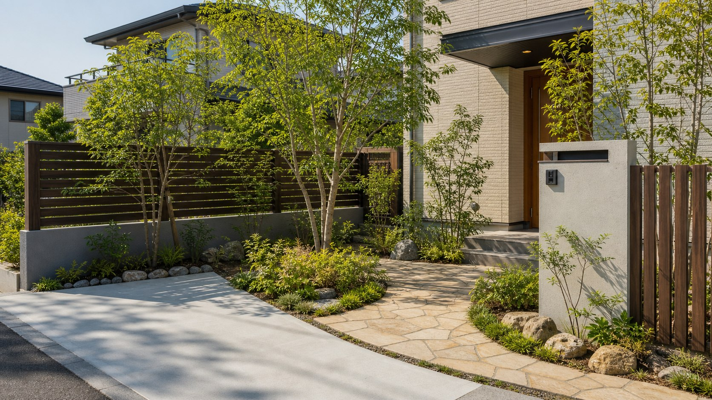

新築外構
建物引渡し前に、駐車台数、門柱、アプローチ、排水、照明をまとめます。地区計画や景観の確認が必要な場合は、設計段階で業者と共有します。
豊中市でエクステリア外構工事をする前に確認したいこと
千里中央・千里ニュータウンの建替え外構工事、庄内・服部のブロック塀工事、岡町・桜塚・蛍池の戸建てカーポート駐車場工事まで、あらゆるエクステリア外構工事情報をまとめました。
ページ目次
相談前ガイド
外構エクステリア工事は「何をしたいか」より先に、敷地と道路の条件で費用も手順も変わります。豊中市では次の相談が初期検討で多くなります。
はじめに
新築、リフォーム、単体のエクステリアでは、確認する順序が少しずつ違います。
建物引渡し前に、駐車台数、門柱、アプローチ、排水、照明をまとめます。地区計画や景観の確認が必要な場合は、設計段階で業者と共有します。
既存塀、土間、庭木、門柱の撤去費が差になりやすい工事です。豊中市ではブロック塀等撤去補助の対象条件と、契約前申込みを先に確認します。
フェンス、カーポート、宅配ボックス、照明、植栽などの単体工事でも、道路側からの見え方、隣地境界、風抜け、保証範囲を合わせて見ます。
需要プロファイル
令和5年住宅・土地統計調査を同じ表でそろえると、豊中市は大阪府平均と同じ持ち家率ですが、一戸建て率は大阪府平均より低めです。つまり、駅近・住宅密集地では狭い駐車動線や目隠し、千里ニュータウンや戸建て街区では経年外構の更新を分けて考える必要があります。
| 指標 | 豊中市 | 大阪府 / 全国 | 外構への読み方 |
|---|---|---|---|
| 専用住宅の持ち家率 | 54.1%（95,260戸 / 176,190戸） | 大阪府54.1% / 全国60.5% | 府平均と同水準。持ち家の門まわり、駐車場、フェンス更新を検討する母数は大きい。 |
| 専用住宅の一戸建て率 | 30.9%（54,510戸 / 176,190戸） | 大阪府39.3% / 全国52.2% | 府平均より低め。敷地が限られる場所では、カーポート柱位置や自転車動線まで見る必要がある。 |
| 一戸建て専用住宅数 | 54,510戸 | 大阪府1,631,600戸 / 全国28,645,300戸 | 比率は低めでも戸建て実数は十分あり、ブロック塀、庭、門柱、駐車場リフォームの需要が残る。 |
| 世帯あたり乗用車参考値 | 0.56台/世帯 | 府・全国平均は同一条件の整備後に掲載 | 駐車場1台分の土間、カーポート、サイクルポート併設の検討材料として使う。 |
住宅系の比較値は、総務省統計局「令和5年住宅・土地統計調査 第10-4表」と豊中市統計書 表46(3)を同一年次で確認しました。車保有の府・全国平均、業者密度、高齢化率は同一年次・同一母数が揃うまで表に出しません。
業者選び
豊中市で外構業者を探すときは、価格だけでなく、現地確認、許可・保険、補助金の順序理解、写真の扱いを見ます。
| 確認項目 | 掲載されているべき内容 | 見るべきポイント |
|---|---|---|
| 建設業許可・保険 | 許可番号、対応工種、損害保険、工事保証の有無。 | 塀、土間、カーポートなどで破損や近隣トラブルが起きた場合の責任範囲を確認します。 |
| 見積の内訳 | 撤去、残土、基礎、商品代、施工費、諸経費、申請補助の項目。 | 「一式」だけの見積は比較しにくいため、工事項目ごとに分けてもらいます。 |
| 施工実績・写真 | 実物写真、施工場所の表現、掲載許可、施工範囲。 | 写真を豊中市の施工実績として出す場合は、実績・同意・表現が一致しているかを見ます。 |
| 保証範囲 | カーポート、フェンス、土間、植栽、照明などの保証対象と期間。 | メーカー保証と施工保証は別です。沈下、ひび、ぐらつきの扱いを確認します。 |
| 補助金申請の順序 | ブロック塀撤去補助、生垣・沿道緑化助成の着手前申込みへの理解。 | 交付決定前に契約・着工すると対象外になる制度があるため、順序を説明できるかが重要です。 |
豊中市内だけで無理に絞るより、吹田市、池田市、箕面市など近隣対応の外構業者も含め、同じ写真・同じ要望書で2から3社に見積もりを依頼します。外構専門店、工務店、ハウスメーカー経由の違い、比較サイトの見方、契約前チェックは外構業者の選び方ガイドにまとめています。
地域情報
豊中市は駅近の住宅密集地、千里ニュータウンの住宅更新エリア、建築協定や景観配慮が絡むエリアが混在します。まず住まいの母数と車の保有を数字で見て、道路との接し方と既存外構の状態を確認します。
令和2年国勢調査、豊中市統計書 表19。総数は176,967世帯です。
令和5年住宅・土地統計調査、豊中市統計書 表46(1)。居住世帯あり住宅は177,270戸です。
令和5年住宅・土地統計調査、表46(3)。専用住宅176,190戸の30.9%です。
令和5年住宅・土地統計調査、表46(3)。専用住宅ベースの持ち家率は54.1%です。
令和7年の戸数。豊中市統計書 表47、資料は建築着工統計調査です。
令和7年4月1日の自家用乗用車等99,935台を、令和5年住宅・土地統計調査の世帯数177,940で割った算出値です。
確認日: 2026年6月22日。統計出典は令和7年豊中市統計書（第3章 国勢調査、第6章 運輸および通信、第9章 建設および住宅）。住宅・土地統計調査の値は標本調査による推計値です。
市東部から吹田市にまたがる千里丘陵に開発されたニュータウンで、全体1,160ha、豊中市域369haと公式に案内されています。
千里ニュータウン豊中市域は人口減少後、集合住宅建替えなどで2015年に約3万5千人まで回復したとされています。
豊中市は都市景観形成マスタープランを運用し、2024年4月1日から改定版を運用しています。
地区整備計画のある区域で一定の行為をする場合は、着手30日前までの届出が必要です。
豊中市には9か所の建築協定地区があり、地域ごとの住環境保全ルールを確認する余地があります。
令和7年豊中市統計書には、住宅数、所有関係、建て方別専用住宅数、道路、公園などの表があります。
対応エリア
同じ豊中市内でも、駅近、ニュータウン、南部の住宅地、古い戸建てが多い街区では、見積もり前に見るポイントが変わります。
| 地区の見方 | 起きやすい相談 | 確認したいこと |
|---|---|---|
| 千里中央・桃山台・緑地公園 | 建替え外構、経年フェンス、植栽整理、駐車場拡張。 | 既存擁壁、植栽の保存、管理規約、景観・地区ルール。 |
| 岡町・曽根・桜塚 | 戸建ての門まわり、駐車場土間、目隠しフェンス。 | 前面道路幅、車の切り返し、門柱の出幅、隣地境界。 |
| 庄内・服部 | 古い塀の撤去、ブロック塀建替、低予算リフォーム。 | 道路側の安全、補助対象条件、搬入経路、残土・廃材処分。 |
| 蛍池・大阪空港周辺 | 駐車場、カーポート、門柱、照明、防犯。 | 交通量、視線、車両出入り、屋根の張り出し、風の影響。 |
工事種類
見積もりは工事項目を分けて依頼すると、豊中市の補助・届出・道路条件の影響を確認しやすくなります。
門柱、表札、ポスト、宅配ボックス、インターホン、照明をまとめて確認します。道路から玄関までの距離、駐車場との干渉、配線位置を先に整理します。
高さ、風抜け、視線、隣地境界、景観配慮を合わせて検討します。目隠し率を上げるほど基礎や風圧の確認が大切です。
柱位置、屋根の張り出し、雨どい、風、車と自転車の動線を見ます。狭小地ではドア開閉と玄関アプローチの幅も同時に確認します。
掘削、残土、砕石、目地、勾配、排水、前面道路からの出入りを確認します。水たまりや道路側への雨水流出を避ける設計が必要です。
安全点検、撤去補助、軽量フェンス化、基礎、隣地境界を分けて検討します。豊中市の補助制度は契約・着工前の確認が重要です。
防草シート、砂利、人工芝、排水、端部処理で手入れを減らします。見た目だけでなく、雑草の出やすい端部と雨水の逃げ方を見ます。
生垣・沿道緑化助成の条件、樹高、保存管理、日照、落葉を確認します。管理できる植栽量にすると、リフォーム後の負担を抑えやすくなります。
タイル、自然石、段差、滑りにくさ、照明、ベビーカーや自転車動線を見ます。雨の日の滑りやすさと夜間の視認性も確認します。
足元灯、防犯灯、門柱灯、配線位置、タイマーや人感センサーを確認します。防犯だけでなく、玄関・駐車場・階段の安全性にも関係します。
施工イメージ
このページでは架空のbefore/afterや施工実績写真は作りません。掲載画像は人が写らない庭先外構のイメージ画像で、豊中市の施工実績ではありません。

料金目安
下の金額は初期検討用の全国的な目安です。豊中市の実際の見積もりは、搬入経路、既存撤去、残土、勾配、排水、素材で変わります。
| 条件 | 費用に影響する理由 | 見積もり前に伝えること |
|---|---|---|
| 既存撤去・残土 | 古い塀、土間、庭木、残土の量で処分費と工期が変わります。 | 撤去したい範囲の写真、塀の高さ、土間面積、庭木の本数。 |
| 前面道路幅・搬入 | 重機や資材車両が入らない場合、手運びや小型機械で工数が増えます。 | 道路幅、駐車可否、近隣交通量、工事車両の停車場所。 |
| 勾配・排水 | 土間コンクリートやアプローチは、雨水の流れと既存マス位置で設計が変わります。 | 水たまりの場所、側溝・雨水マス、道路との高低差。 |
| 補助金・届出 | ブロック塀撤去補助や生垣助成は着手前申込みが必要で、順序が費用計画に影響します。 | 補助を使いたい工事、着工希望時期、対象になりそうな塀や植栽範囲。 |
| 素材グレード | フェンス、カーポート、門柱、タイル、照明は商品差が大きい項目です。 | 優先したい見た目、耐風、防犯、メンテナンス、予算上限。 |
| 工事項目 | 目安 | 豊中市で確認したい変動要因 |
|---|---|---|
| 新築外構一式 | 50万から200万円 | 門柱、駐車場、フェンス、植栽、照明、宅配ボックスの範囲 |
| 外構リフォーム | 10万から100万円 | 撤去、既存利用、境界、道路側の安全確保、廃材処分 |
| カーポート1台 | 20万から40万円 | 柱位置、屋根材、耐風、前面道路からの出入り、サイクルポート併設 |
| 駐車場コンクリート1台 | 15万から40万円 | 掘削、残土、勾配、排水、目地、既存舗装撤去 |
| フェンス1m | 5,000円から60,000円 | 高さ、目隠し率、風抜け、基礎、境界位置、景観配慮 |
見積書の読み方、諸経費、早期契約を迫られたときの考え方は外構見積もりの見方ガイドにまとめています。
補助・制度
補助金は年度、受付期間、予算、対象条件で変わります。2026年6月時点で豊中市公式ページから確認できた制度を、申請時期まで含めて比較します。
| 制度名 | 補助・上限 | 申請・出典 |
|---|---|---|
| ブロック塀等撤去補助 | 道路に面し、高さ60cm超で安全性が確認できないブロック塀等を全て撤去する工事が対象。工事金額の4/5、または1㎡13,000円×面積の4/5、または上限20万円のうち最も低い額。 | 撤去工事の着手・契約前に申請。交付決定前に着手すると利用不可。豊中市公式 |
| 生垣・沿道緑化助成 | 道路に面し外部から眺望できる生垣・沿道緑化が対象。生垣は設置費用の4/5、沿道緑化は1/2。生垣と沿道緑化を合わせて上限10万円。 | 設置前申込み。見取図、植栽計画平面図、見積書、設置前写真を用意。豊中市公式 |
| 景観計画区域の行為届出 | 景観計画区域で、まちなみに影響する規模の建築物・工作物などを扱う届出制度。補助制度ではありません。 | 法令等の申請手続き前に確認。都市計画課窓口、郵送、オンライン手続きに対応。豊中市公式 |
| 地区計画の届出 | 地区整備計画のある区域で、一定の建築物・工作物・形態意匠変更などを行う場合の適合確認。補助制度ではありません。 | 行為着手30日前まで。建築確認申請を要する場合は確認申請前。豊中市公式 |
| 建築協定 | 豊中市内の建築協定地区。2026年6月時点で9か所が公式に掲載されています。補助制度ではありません。 | 外構の高さ、色、配置に関係する場合があるため、計画段階で協定内容を確認。豊中市公式 |
外構タイプ
豊中市の住宅地では、敷地の広さ、前面道路、通行量、視線、駐車のしやすさを同時に見ると方向性を決めやすくなります。
敷地を広く見せやすく、駐車スペースを確保しやすい形。駅近や狭小地では現実的ですが、防犯照明や視線対策を組み合わせます。
塀や門扉で囲う形。安心感は出ますが、費用、圧迫感、景観・地区ルール、ブロック塀安全性を慎重に確認します。
低めの塀、フェンス、植栽で必要な部分だけ隠す形。豊中市の住宅地では、費用と暮らしやすさのバランスを取りやすい選択肢です。
施工の流れ
補助制度や届出が関係する場合は、見積もり前後で確認順序が変わります。工事開始前の写真と書類を残しておくと安心です。
駐車台数、目隠し、植栽、宅配ボックス、照明、防草などを分けて優先順位を決めます。
道路幅、勾配、排水、境界、既存塀、搬入経路、電気・水道位置を写真付きで確認します。
ブロック塀等撤去補助、生垣・沿道緑化助成、景観計画、地区計画、建築協定を必要に応じて確認します。
撤去、残土、基礎、商品代、施工費、諸経費、保証範囲を同じ粒度で比較します。
近隣挨拶、車両搬入、騒音時間、道路側の安全養生を確認して進めます。
勾配、排水、ぐらつき、傷、植栽の状態、保証書、助成の完了書類を確認します。
業者比較
ポータル情報だけで決めず、現地確認の丁寧さと見積書の分かりやすさを見ます。
| 比較項目 | 確認内容 | 良い表示例 |
|---|---|---|
| 現地調査 | 道路幅、勾配、排水、境界、既存塀を見ているか。 | 写真と寸法をもとに、撤去範囲と新設範囲を分けて説明している。 |
| 見積書 | 商品代、施工費、撤去、残土、諸経費、申請補助が分かれているか。 | 「フェンス本体」「基礎」「既存撤去」など項目ごとに数量がある。 |
| 補助金 | 着手前申込みや交付決定前着工NGを理解しているか。 | ブロック塀撤去補助と生垣助成の必要書類を工事前に確認している。 |
| 保証 | 施工保証、商品保証、植栽枯れ保証の対象と期間。 | 保証書やアフター対応範囲を契約前に提示している。 |
注意点
即決を急かす、現地を見ない、書面が薄いといったサインがある場合は、契約前に一度立ち止まります。
撤去・残土・商品代が分からず比較できない。
道路幅、勾配、排水、境界の条件が反映されない。
補助金や届出の確認前に契約させようとする。
仕様、保証、追加費用の条件が残らない。
着手前申込みが必要な制度を使えなくなる恐れ。
素材・デザイン
豊中市の外構では、見た目だけでなく安全性、維持管理、道路側からの見え方、緑化助成の条件を合わせて考えます。
駐車場では定番。勾配と排水、目地、タイヤ跡、ひび割れ対策を見積書に入れます。
目隠し率と風抜けのバランスが重要。高さを上げるほど基礎と圧迫感の確認が必要です。
アプローチの印象を整えます。濡れたときの滑りやすさ、段差、掃除のしやすさを確認します。
生垣・沿道緑化助成を使う場合、道路面、樹高、延長、5年以上の保存管理条件を先に確認します。
宅配ボックス、表札、照明、インターホンの配線位置を早めに決めると追加費用を抑えやすくなります。
管理を軽くする選択肢。防草シートの品質、端部処理、排水、歩行音を確認します。
FAQ
公式情報と初期検討の実務で迷いやすい点をまとめています。
豊中市公式情報では、生垣は設置費用の4/5、沿道緑化は1/2、合計上限10万円です。設置前の申込み、道路に面して外部から眺望できること、生垣延長2m以上などの条件があります。
はい。2026年6月時点で、豊中市のブロック塀等撤去補助制度は、工事金額の4/5、または1㎡13,000円×面積の4/5、または上限20万円のうち最も低い額です。道路に面し高さ60cm超で安全性が確認できないブロック塀等を全て撤去する工事が対象で、契約前申込みが必要です。
千里ニュータウンは建替えや住宅更新の動きがある地域です。既存塀、擁壁、植栽、隣地境界、管理規約や地区のルールを先に確認し、撤去と新設を分けた見積もりにすると比較しやすくなります。
地区整備計画のある区域で一定の行為をする場合は、着手30日前までの届出が必要です。景観計画区域の行為届出制度もあるため、塀、門柱、カーポート、外観変更が大きい工事は事前確認が安心です。
初期検討では1台分15万から40万円を目安にし、掘削、残土、勾配、排水、目地、既存撤去の有無で増減を見ます。狭小地や前面道路が狭い場合は搬入費も確認します。
駅近や敷地に余白が少ない場所はオープン外構で駐車・通行スペースを確保しやすく、通行量が多い道路沿いや視線が気になる場所はセミクローズで低めの塀や植栽を組み合わせる考え方が現実的です。
柱位置、屋根の張り出し、隣地境界、雨どい、道路への出入りを確認します。敷地が限られる場合は、車のドア開閉と自転車動線も同時に見ます。
2から3社を目安に、同じ要望書と写真を渡して比較します。項目の粒度が違う場合は、撤去、残土、基礎、商品、施工費、保証を分けて再確認します。
悩み別ガイド
費用、業者選び、施工後トラブル、境界・近隣、ハウスメーカー経由、製品選びは全国共通の悩みが多いため、正規ガイドに集約しています。
詳しい解説
豊中市で外構工事を調べるときに検索されやすい項目を、地域事情を踏まえて整理します。
豊中市で外構工事を考えるときは、まず道路側の安全、駐車動線、境界、排水を分けて確認します。駅に近い住宅地では敷地に余白が少なく、門柱やフェンスの数センチが車の出入りに影響することがあります。千里ニュータウン周辺では既存植栽や古い塀の扱いが見積もり差になりやすく、撤去と新設の範囲を写真付きで整理することが重要です。
エクステリアは見た目の統一だけでなく、生活動線と維持管理の設計です。豊中市では景観計画区域や建築協定地区が関係する場合があるため、フェンスの高さ、色、門柱の位置、植栽の見え方を早めに確認します。宅配ボックス、照明、インターホン、表札を一体で考えると、後から配線や柱を追加する手戻りを避けやすくなります。
駐車場コンクリートは、面積だけでなく掘削深さ、残土、砕石、ワイヤーメッシュ、目地、勾配、排水で費用が変わります。豊中市の住宅地では前面道路が狭い場所もあり、車両搬入やポンプ車の要否が追加費用になることがあります。雨水が道路や隣地に流れないよう、既存マスや側溝の位置を現地で確認しておきます。
カーポートは商品代より、柱位置と納まりの検討が大切です。玄関アプローチ、自転車置き場、隣地境界、雨どい、道路への出庫角度を同時に見ます。風の影響を受けやすい場所や開けた道路側では耐風性能も確認します。既存コンクリートへ後付けする場合は、基礎を設ける範囲と補修跡の仕上げも見積もりに入れておきます。
フェンスは高さを上げれば安心というものではなく、風抜け、視線、圧迫感、基礎の強さを合わせて決めます。道路沿いでは歩行者からの見え方、隣地側では越境や施工スペースを確認します。景観や建築協定が絡む地区では、色や高さの考え方を先に確認すると、発注後の変更を避けやすくなります。
ブロック塀は所有者責任で安全性を確認する必要があります。豊中市は大阪府北部地震での倒壊被害を踏まえ、点検表を参考にした確認と、危険性がある場合の注意表示、専門家への相談、撤去・補修を案内しています。さらに2026年6月時点では、道路に面し高さ60cm超で安全性が確認できないブロック塀等を全て撤去する工事に、上限20万円の撤去補助があります。交付決定前の契約は対象外なので、工事前に公式条件を確認します。
豊中市の生垣・沿道緑化助成は、外構計画に植栽を入れる場合に確認したい制度です。生垣は設置費用の4/5、沿道緑化は1/2、合計上限10万円が公式に案内されています。設置前申込みが必要で、道路に面し外部から眺望できること、延長2m以上、樹高原則1m以上、5年以上の保存管理などの条件を満たす必要があります。
門まわりは玄関までの距離、郵便・宅配、表札、照明、防犯、道路からの視線をまとめて設計します。敷地が限られる場合は、門柱を大きくしすぎると駐車や自転車の出入りを妨げます。景観配慮が必要な区域では色や素材の印象も見られるため、建物外壁と外構素材を並べて確認しておくと全体のまとまりが出ます。
庭リフォームは、管理できる植栽量を現実的に決めることが大切です。防草シートや砂利だけで全体を固めると夏場の照り返しが強くなることもあるため、日陰、排水、土の残し方を合わせて検討します。道路に面する植栽は、生垣・沿道緑化助成の対象になる可能性があるため、工事前に条件を確認します。
近隣ページ
近隣市や大阪府ページは、公式情報の確認後に順次追加します。
クロージング
見積もり前に写真、撤去範囲、道路幅、使いたい補助制度を整理しておくと、業者比較の精度が上がります。
窓口
制度や受付状況は変更される場合があります。相談前に豊中市公式ページで最新情報を確認してください。
運営者情報
このページは外構・エクステリアの地域情報を整理するポータル/メディアです。特定の施工業者、施工実績、見積もり代行サービスとして表示していません。
公式情報
豊中市公式ページを中心に、2026年6月22日に確認しました。
最終更新日: